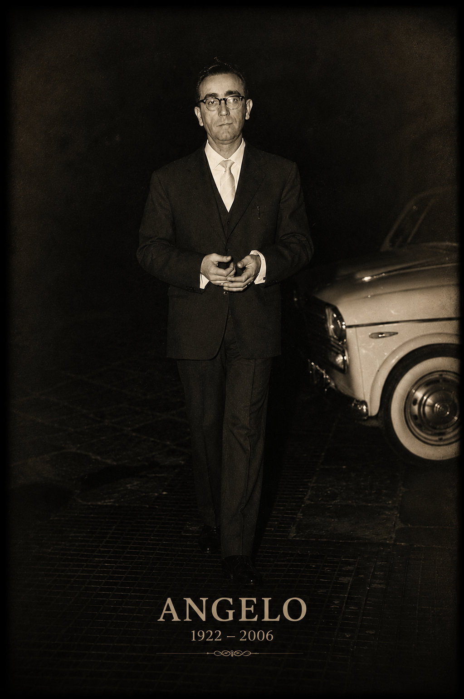

Fotografia originale restaurata digitalmente tramite AI · Archivio Fotografico Cardiello.
Dati principali
| Nome | Angelo Cardiello |
|---|---|
| Nascita | 19 febbraio 1922 |
| Luogo di nascita | Eboli |
| Morte | 6 gennaio 2006 |
| Luogo di morte | Eboli |
| Padre | Cosimo Cardiello |
| Madre | Concetta Marzullo |
| Professione | Impiegato del Pastificio Pezzullo |
| Coniuge | Vincenza Ferrara |
| Matrimonio | 31 ottobre 1959 |
| Luogo del matrimonio | Eboli |
| Figli documentati | 3 |
| Linea esposta | prosegue attraverso Nicola Cardiello |
Biografia
Angelo Cardiello nacque a Eboli il 19 febbraio 1922 da Cosimo Cardiello e Concetta Marzullo.
Fin da giovane intraprese gli studi superiori e nel 1939 conseguì l'abilitazione all'insegnamento della religione nelle scuole elementari.
Nel 1940 si iscrisse all'Istituto Universitario Orientale di Napoli al corso di laurea in Scienze Coloniali, sostenendo diciotto esami universitari. Gli eventi della Seconda Guerra Mondiale impedirono tuttavia il completamento del percorso accademico.
Durante il conflitto prestò servizio nell'Esercito Italiano e partecipò alla difesa di Roma nei giorni successivi all'8 settembre 1943.
Nel dopoguerra lavorò come impiegato presso il Pastificio Pezzullo di Eboli.
Nel marzo 1960 fu eletto Sindaco di Eboli, incarico che mantenne fino al giugno 1961.
Profondamente legato alla vita religiosa cittadina, svolse il ministero di diacono presso la Chiesa di San Bartolomeo.
Morì il 6 gennaio 2006 all'età di 83 anni.
Servizio militare e Difesa di Roma
Durante la Seconda Guerra Mondiale Angelo Cardiello prestò servizio nell'Esercito Italiano.
Inquadrato nella 3ª Compagnia del XV Battaglione d'Istruzione, partecipò alle operazioni di difesa della Capitale contro le forze tedesche il 9 e 10 settembre 1943.
Operò nell'area della Via Tuscolana e dell'aeroporto di Ciampino Sud sotto il comando della Divisione Granatieri di Sardegna.
Attività pubblica
Nel marzo 1960 Angelo Cardiello fu eletto Sindaco di Eboli.
Il suo mandato si svolse durante una fase di profonda trasformazione economica e sociale della città, accompagnando Eboli nei primi anni del boom economico italiano.
Vita religiosa
Parallelamente all'impegno civile, Angelo Cardiello dedicò una parte significativa della propria vita alla Chiesa.
Fu diacono presso la Chiesa di San Bartolomeo, svolgendo il proprio ministero con continuità e partecipazione alla vita della comunità ebolitana.
Coniuge
Vincenza Ferrara
| Nascita | 29 gennaio 1932 |
|---|---|
| Luogo | Eboli |
| Morte | 20 aprile 2010 |
| Luogo | Eboli |
| Padre | Vito Ferrara |
| Madre | Giuseppina Corrado |
| Matrimonio | 31 ottobre 1959 |
Dopo il matrimonio la coppia abitò inizialmente nella casa di Concetta Marzullo in Corso Umberto I e successivamente si trasferì nella nuova abitazione sulla Strada Statale 18.
Figli documentati
| Nome | Data |
|---|---|
| Nicola | 1960–2007 |
| Anna Carmela | - |
| Vincenzo | - |
Luoghi
- Eboli
- Pastificio Pezzullo
- Chiesa di San Bartolomeo
- Corso Umberto I
- Strada Statale 18
- Roma – Via Tuscolana
- Aeroporto di Ciampino Sud
Fonti
- Registro Battesimi
- Registro Matrimoni
- Registro Morti
- Documentazione militare
- Documentazione amministrativa comunale
Note genealogiche
Con Angelo Cardiello la linea familiare entra pienamente nella storia contemporanea. La sua attività pubblica, religiosa e amministrativa ne fa una delle figure più documentate dell'intero archivio genealogico.
Documenti e approfondimenti
Sezione in aggiornamento. Saranno inseriti documenti militari, fotografie, materiali relativi all'attività amministrativa come Sindaco di Eboli e testimonianze della sua attività religiosa.